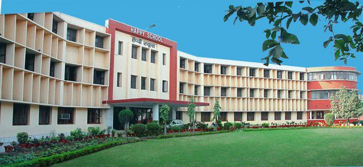
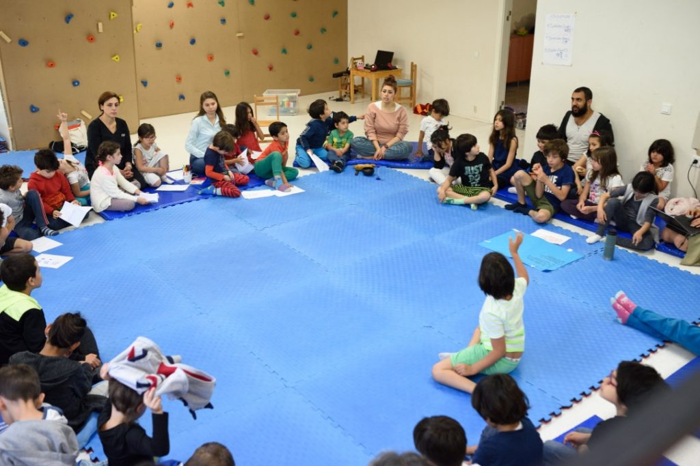
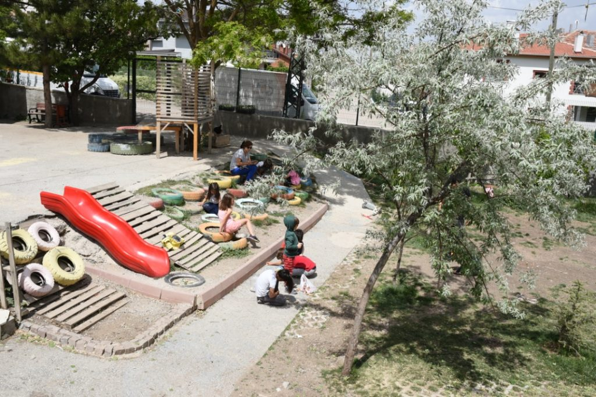
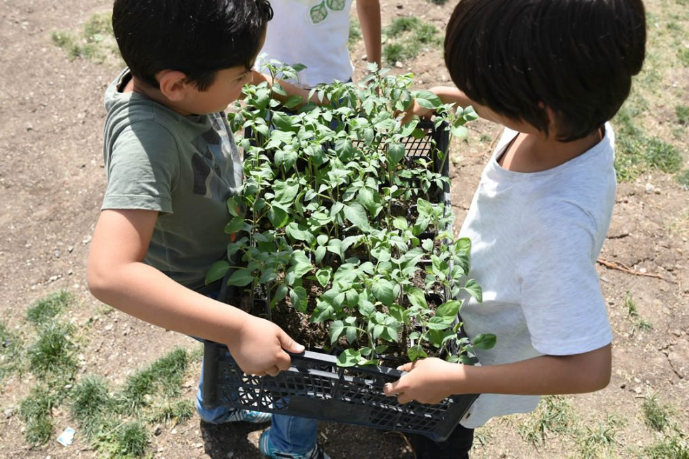
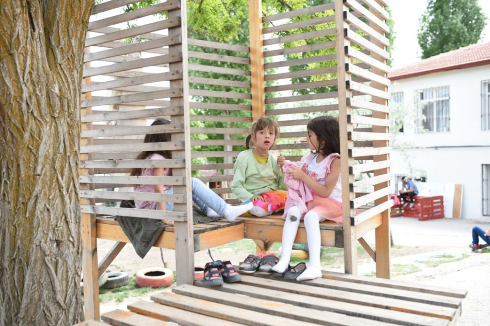

Haklarının farkında olan; topluma ve doğaya karşı sorumluluklarını bilen; biliş, duygu ve
davranış
bakımından özgün potansiyelini ortaya koyabilen; demokratik tutum ve davranışları hayatın her
alanında sergileyebilen; merakının peşinde giden; çocuk doğasına hizmet eden özgüveni ile
güçlüklerle baş edebilen, hayal gücü kuvvetli, mutlu ve eğitim sürecini yönetebilen bireyler
yetiştirmektir.

Okulumuza genel bakış...
Neden Happy School?
Zorlayıcılık Yok
Happy Schoolzorlayıcı değildir, öğrenciler özgürdür, seçme hakkına sahiptir. Okuldaki
yetişkinlerle uygun anlaşmaları yaparak, kendi belirledikleri alanlarda ve etkinliklerde zaman
geçirebilirler. Öğrencilerin kompozisyonlarında aslolan hikayedir; el yazılarının güzelliği
değerlendirilmez.

Sınıf kuralları belirlerken öğrencilerimiz...
Rekabet Yok
Her bir Happy School öğrencisi kendi hızında öğrenir, kendilerine rakip seçmezler, yarışı eğitim
hayatlarının
merkezine almazlar.

Öğrencilerimiz ile yapmış olduğumuz oyun alanı...
Öğrenme Hayatın İçinde
Happy School öğrencileri kendilerini müzik dersinde matematik, beden eğitiminde ise fizik
öğrenirken
bulabilirler. Çünkü Happy School'da atölyeler birbirine bağlanarak ve bütün yaş gruplarını
bir arada bulundurularak işlenir.

Bahçe bilgisi dersimizden bir kare...
Özgür
Happy School öğrencileri özgür iradeleriyle seçim yaparlar. Matematik dersinde havuz problemleri
yerine,
yağmur biriktirme projeleriyle uğraşmayı seçebilirler.

Sohbet köşemiz...
Okul hayata hazırlanış değil, hayatın kendisidir. F. Chatelain